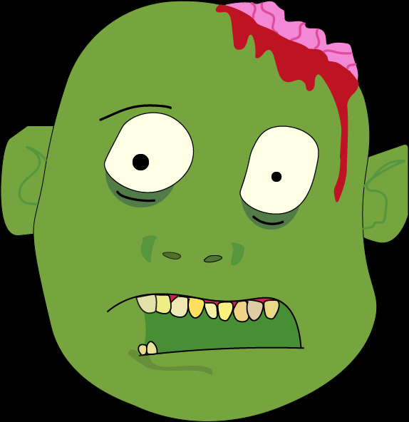

Hello there, my name is Todd, and I'm a zombie. I'm not sure how long I've been a zombie, I know I had a life before the apocalypse, I just don't remember much about it. Anyway, I like to think about what I might have done before the apocalypse. Maybe I was a dentist, or an artist, or a singer, or a pilot! I wish I could remember something about my life, about me. You'd think after all the brains I've eaten in my time as a zombie I'd have more memories.
 Most people think zombies are lazy creatures, but I actually live a pretty busy "life", considering I'm not technically alive. I usually wake up at, ... oh, I don't sleep actually. But I do eat! For breakfast I have a nice, protein-filled, bowl of brains, and I wash it down with gasoline. It probably doesn't sound very appetizing, but gasoline is the orange juice of the apocalypse, trust me. I wander about for a few hours, looking for people, animals, other zombies, you get it. I like to eat lunch out, but I'm back in time for dinner.
I don't know if any of you have ever moved, but it sure is a hassle. I move about a mile every week, since humans are pretty rare in most areas now, I have to stay on the move.
Anyway, I think it's fair to say that I've found my way as a zombie. Recently, I found a group of fellow zombies, they're not so bad. I think I'll stick with them for a while, I don't really have anything to lose, and the company might be nice. If there's one thing I can say, it's that the apocalypse isn't so bad, you might like it. Anyway, maybe I'll see you around, I guess it's goodbye for now.
- Todd